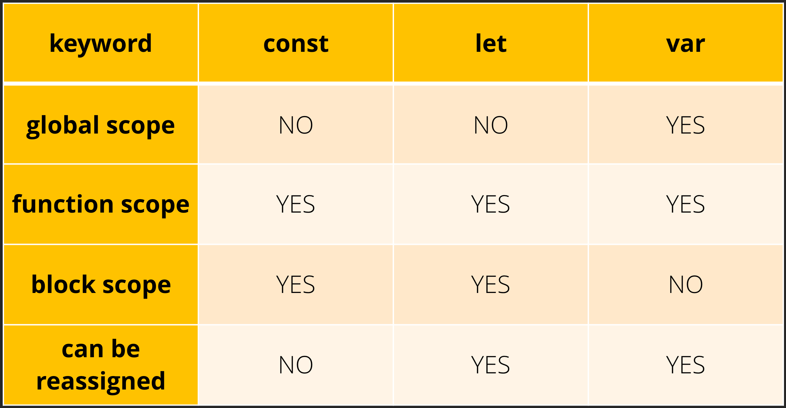

Discuss the scope of var, let, and const..
In javascript var ,let anf const are used to declare variables but they differ in terms of scope ,lets discuss the scope of each.
var:
- **Function scope: Variables declared with var are function-scoped.This means they are only accessible within the function in which they are defined.
- **Hoisting: Variables declared with var are hoisted to the top of their containing function or global scope. This means you can access a var variable before it's declared in the code, but its value will be undefined.
- **Reassignment: You can reassign values to a var variable even within the same scope.
Tell us the use cases of null and undefined?
undefined:
- **Default Value: When a variable is declared but not initialized, it is automatically assigned the value undefined. This can be useful when you want to indicate that a variable has been declared but hasn't been given a meaningful value yet.
- **Function Parameters: When a function is called with fewer arguments than declared parameters, the missing parameters are undefined. You can use this to create optional parameters or provide default values.
null:
- **Error Handling: In some cases, null can be used to indicate an error or an unsuccessful operation.
What do you mean by REST API?
Rest API
REST API, which stands for Representational State Transfer Application Programming Interface.
- GET: Retrieve data from a resource (read-only).
- POST: Create a new resource.
- PUT: Update an existing resource (replacing it entirely).
- PATCH: Update a part of an existing resource.
- DELETE: Remove a resource.
HTTP Methods: REST APIs use standard HTTP methods (verbs) for performing actions on resources. The most common HTTP methods used in REST are: